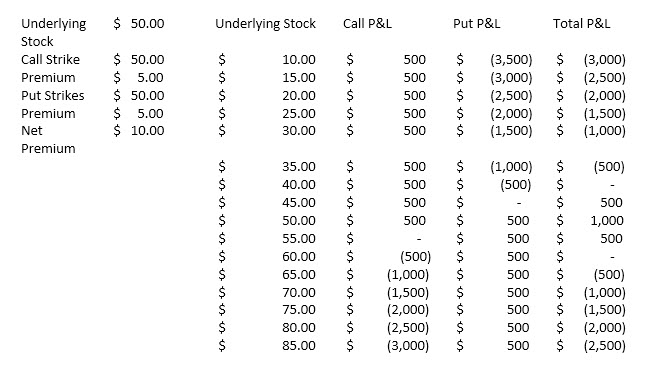

Short Straddle
The short straddle seller is hoping for a lack of movement in the price of the underlying shares and is indifferent to direction. It is a fairly pure bet on decreasing volatility, and benefits from decay. A short straddle is created when an investor sells an equal number of calls and puts with the same strike and expiration. It may be used when investors expect a decrease in either implied volatility or in the movement of the price of the underlying equity. Profit is limited to the initial premium received, while loss is potentially unlimited. The direction of the stock does not matter to the straddle buyer as long as the movement up or down from the strike stays within the price received for the straddle. The maximum gain is the cost of the trade and occurs if the stock closes at the strike price. Time decay helps a straddle seller. The combination has two breakeven points equal to the strike price plus the cost of the trade and the strike price minus the cost of the trade. The straddle seller loses money if the underlying price exceeds a range around the strike price beyond the total premium received.
Short Straddle example – • Underlying XYZ stock price: $50.00 • Call strike price: 50.00 • Call option premium: $5.00 • Put strike price: 50.00 • Put option premium :$5.00 • Days to expiration: 90 • Upside Breakeven: $50.00+$5.00+$5.00 = $60.00 (Strike price plus premium received for call plus premium received for put option) • Downside Breakeven: $50.00-$5.00-$5.00 = $40.00 (Strike price minus premium received for call minus premium received for put option) • Profit potential: Limited to the combined premiums from both call and put or $10.00 and occurs at the $50.00 strike price. At that strike price, neither option has any extrinsic value nor any intrinsic value at expiration. Above the central strike price, while the put option has zero value, the call option does and begins to erode the profitability of the trade. Below the central strike price, the call has zero extrinsic value, while the put has an increasing amount as the share price declines, thus also eroding the profitability of the trade. • Potential profit:@$55.00 – The put option is out-the-money and has zero value. But the call option has $5.00 value and this must be subtracted from the net premium received ($10.00 - $5.00 = $5.00). • @$60.00 – The in-the-money call option now has $10 intrinsic value is completely offsets the profitability of the trade ($10.00 - $10.00 = zero). • @$35.00 – At all values below the central strike price the put option has intrinsic value, and in this case is worth $12.00 ($50.00 - $38.00 = $12.00). And so the net loss from the trade is the amount of net premium minus the distance between the central strike price and the value of the shares ($10.00 - $12.00 = $2.00). • Maximum loss: Loss potential is unlimited to the upside, since the intrinsic call value keeps up with the rising share price penny-for-penny. Losses to the downside can be significant as the intrinsic nature of the put option matches the downside performance of the stock penny-for-penny, limited only by a zero value for the underlying share price.
Market Outlook - Neutral Volatility View - Decreases premium Time Erosion - Reduces premium Dividends - Neutral Interest Rate - Neutral Profit Potential - Limited Loss Potential - Substantial from short put/ unlimited from short call Components - Sell same strike call and put option with same expiration

Disclosures Options involve risk and are not suitable for all investors. For more information, read the “Characteristics and Risks of Standardized Options”. For a copy, call 312-542-6901. Trading on margin is only for sophisticated investors with a high risk tolerance. You may lose more than your initial investment. For additional information regarding margin loan rates, see ibkr.com/interest.
Multiple leg strategies, including spreads, will incur multiple commission charges.